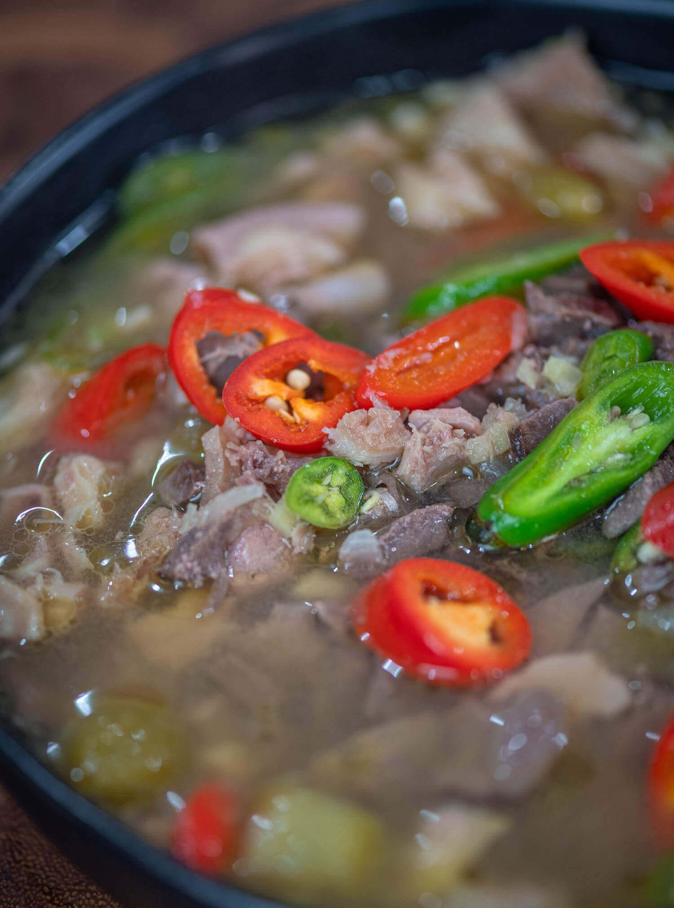

Pinapaitan Sa Ampalaya Recipe
What is Pinapaitan Sa Ampalaya?
A fiesta of flavors sets Filipino cuisine heads and shoulders apart from the rest. Never one to shy away from the sweet, savory, or sour, it logically follows that we'd explore even the bitter aspects of food, too. For many, bitter food may often turn us away from the dining table almost immediately. But for those who know just what to do with some ingredients — and how to do them well — even bitter dishes can end up becoming your most favorite. This pinapaitan sa ampalaya may be just what you need to turn your opinion on bitter food all the way around.
Ingredients
2 bitter melons
10 ounces beef tripe
10 ounces beef heart
4 ounces pork liver
12 ounces beef small intestine
5 chili pepper
5 kamias
1 onion
3 thumbs ginger
5 cloves garlic
5 tablespoons white vinegar
6 cups water
3 tablespoons cooking oil
Fish sauce and ground black pepper to taste
Instructions / How to Cook
1. Prepare the bitter melons by removing the seeds. Chop the veggies into small pieces. Note: you can also use a food processor for best results.
2. Boil water in a cooking pot. Add chopped bitter melons. Boil for 3 minutes. Set aside.
3. Heat oil in a clean wok or pan. Sauté garlic, onion, and ginger.
4. Once the onion softens, add the beef tripe, beef heart, and small intestine. Cook for 5 to 7 minutes.
5. Add liver. Cook for 1 minute.
6. Pour vinegar into the wok. Let the mixture boil.
7. Pour the water used to boil the bitter melons while straining. Cover and let the liquid boil. Set the heat to low. Continue boiling until all the ingredients gets tender.
8. Add kamias and chili peppers. Cook for 15 minutes.
9. Season with fish sauce and ground black pepper. Serve hot. Share and enjoy!